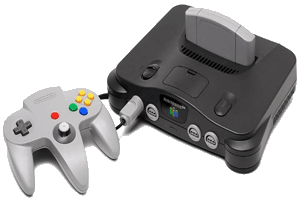
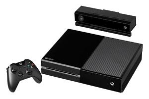
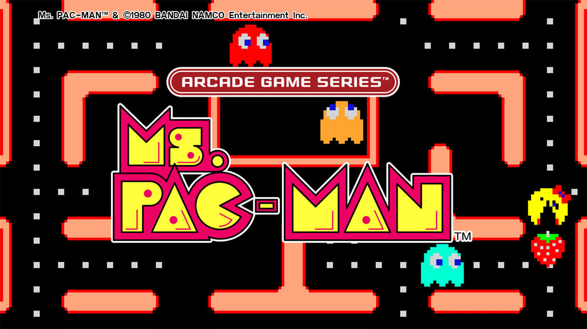
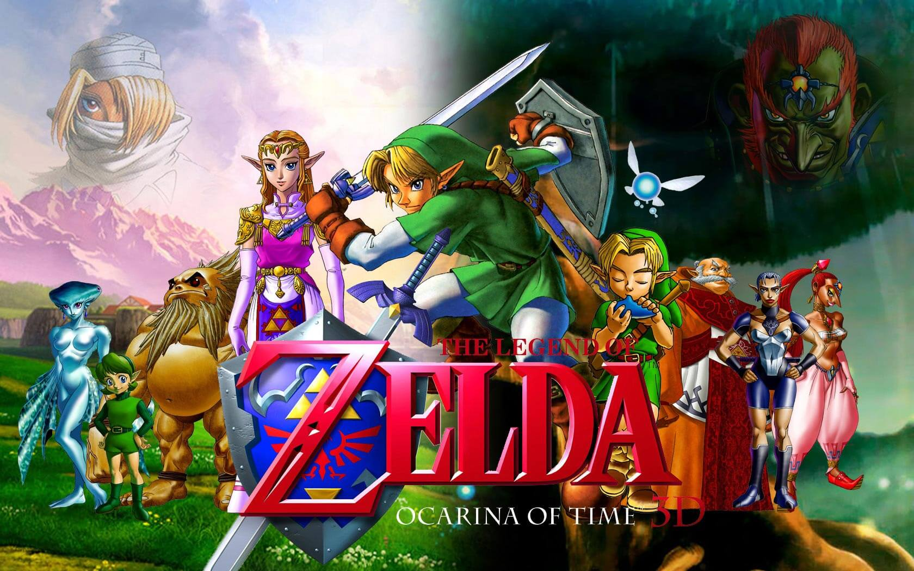

Video Games
Today, video games make up a $100 billion global industry, and nearly two-thirds of American homes have household members who play video games regularly. And it’s really no wonder: Video games have been around for decades and span the gamut of platforms, from arcade systems to home consoles, to handheld consoles and mobile devices. They’re also often at the forefront of computer technology.
History
the early days
Though video games are found today in homes worldwide, they actually got their start in the research labs of scientists. In 1952, for instance, British professor A.S. Douglas created OXO, also known as noughts and crosses or a tic-tac-toe, as part of his doctoral dissertation at the University of Cambridge. And in 1958, William Higinbotham created Tennis for Two on a large analog computer and connected oscilloscope screen for the annual visitor’s day at the Brookhaven National Laboratory in Upton, New York. In 1962, Steve Russell at the Massachusetts Institute of Technology invented Spacewar!, a computer-based space combat video game for the PDP-1 (Programmed Data Processor-1), then a cutting-edge computer mostly found at universities. It was the first video game that could be played on multiple computer installations.
dawn of the home console
In 1967, developers at Sanders Associates, Inc., led by Ralph Baer, invented a prototype multiplayer, multiprogram video game system that could be played on a television. It was known as “The Brown Box.” Baer, who’s sometimes referred to as Father of Video Games, licensed his device to Magnavox, which sold the system to consumers as the Odyssey, the first video game home console, in 1972. Over the next few years, the primitive Odyssey console would commercially fizzle and die out. Yet, one of the Odyssey’s 28 games was the inspiration for Atari’s Pong, the first arcade video game, which the company released in 1972.
In 1975, Atari released a home version of Pong, which was as successful as its arcade counterpart. Magnavox, along with Sanders Associates, would eventually sue Atari for copyright infringement. Atari settled and became an Odyssey licensee; over the next 20 years, Magnavox went on to win more than $100 million in copyright lawsuits related to the Odyssey and its video game patents. In 1977, Atari released the Atari 2600 (also known as the Video Computer System), a home console that featured joysticks and interchangeable game cartridges that played multi-colored games, effectively kicking off the second generation of the video game consoles.
the video game crash
In 1983, the North American video game industry experienced a major “crash” due to a number of factors, including an oversaturated game console market, competition from computer gaming, and a surplus of over-hyped, low-quality games, such as the infamous E.T., an Atari game based on the eponymous movie and often considered the worst game ever created. Lasting a couple of years, the crash led to the bankruptcy of several home computer and video game console companies.
The video game home industry began to recover in 1985 when the Nintendo Entertainment System (NES), called Famicom in Japan, came to the United States. The NES had improved 8-bit graphics, colors, sound and gameplay over previous consoles.

the first console war
Also in 1989, Sega released its 16-bit Genesis console in North America as a successor to its 1986 Sega Master System, which failed to adequately compete against the NES. With its technological superiority to the NES, clever marketing, and the 1991 release of the Sonic the Hedgehog game, the Genesis made significant headway against its older rival. In 1991, Nintendo released its 16-bit Super NES console in North America, launching the first real “console war.”
the rise of 3D gaming
With a leap in computer technology, the fifth generation of video games ushered in the three-dimensional era of gaming. In 1995, Sega released in North America its Saturn system, the first 32-bit console that played games on CDs rather than cartridges, five months ahead of schedule. This move was to beat Sony’s first foray into video games, the PlayStation, which sold for $100 less than the Saturn when it launched later that year. The following year, Nintendo released its cartridge-based 64-bit system, the Nintendo 64. Though Sega and Nintendo each released their fair share of highly-rated, on-brand 3D titles, such as Virtua Fighter on the Saturn and Super Mario 64 on the Nintendo 64, the established video game companies couldn’t compete with Sony’s strong third-party support, which helped the Playstation secure numerous exclusive titles. Simply put: Sony dominated the video game market and would continue to do so into the next generation.

Consoles
This is a list of home video game consoles in chronological order, which includes the very first home video game consoles ever created, such as first generation Pong consoles, from the first-ever cartridge console Odyssey, ranging from the major video game companies such as Magnavox, Atari, Nintendo, Sega, NEC, 3DO, SNK, Sony, Microsoft to secondary market consoles. The list is divided into eras which are named based on the dominant console type of the era, though not all consoles of those eras are of the same type. Some eras are based on how many bits a major console could process.
First Generation (1972–1980)
magnavox odyssey (1972)
ping-o-tronic (1974)
color tv-game (1977)
second generation (1976–1992)
fairchild channel f (1976)
fairchild channel fii (1979)
rca studio ii
third generation (1983–2003)
nes (1983)
sega master system (1985)
atari 7800
fourth generation (1987–2004)
turbografx-16 (1987)

sega genesis (1988)
snes (1990)
fifth generation (1993–2005)
fm towns marty (1993)
playstation (1994)
nintendo 64 (1996)
sixth generation (1998–2013)
playstation 2 (2000)
gamecube (2001)
xbox (2001)
seventh generation (2005–2017)
xbox 360 (2005)
playstation 3 (2006)
wii (2006)

eighth generation (2012–present)
wii u (2012)

playstation 4 (2013)
xbox one (2013)
Video Games
top 10 video games of all time
10. world of warcraft

Blizzard’s bracing 2004 fantasy simulation World of Warcraft introduced millions of players to the concept (and joys and frustrations) of massively multiplayer online worlds. Like so many influential products, it didn’t invent so much as refine and perfect—from the way gamers meet-up and socialize online to how to populate large digital worlds with satisfying stuff to do. It was one of the first games to render a landmass that felt “real” and un-gated, allowing players to run from one end of the continents in its fictional Azeroth to the other without seeing a loading screen. It also de-stigmatized and normalized online gaming by, over time, revealing that its millions of players (some 12 million at its peak in 2010) were no different from non-players. The massive revenue it generated for years also spurred legions of game designers to try to create similar online playgrounds.
9. the oregon trail
“You have died of dysentery.” The Oregon Trail’s notorious proclamation of ultimate doom was only part of the software’s brutal charm. As a simulation of Westward Expansion consisting of a choose-your-own-adventure strategy and hunt-to-survive gameplay, it was rudimentary. But in part because it was originally developed in 1971 by three student teachers at Carleton College in Minnesota as an educational tool, The Oregon Trail found a captive—and willing—audience in thousands of classrooms across the country equipped with Apple II computers in the 1980s. There, it helped introduce an entire generation (several, in fact) to video games.
8. super mario bros.
It’s 1985, the Nintendo Entertainment System has invaded American living rooms, and brothers Mario and Luigi are running rampant through the Mushroom Kingdom. They’re stomping on goombas, de-shelling winged turtles, bashing question mark blocks and lobbing fireballs—like this is totally normal plumber behavior. (Clearly the 1970s drugs worked.) Yet however bizarre this side-scroller seems at face value, it’s also as insanely fun to play today as it was three decades ago. And in the wake of Mario’s nonstop running, this platformer par excellence turned the NES into a must-have appliance, Mario into a beloved gaming franchise and Nintendo into a household name. Talk about grabbing the flag.
7. the legend of zelda
Sure, there’s undeniable nostalgia associated with this 1986 NES classic, but there’s no arguing how engrossing the original Zelda was to play. Mixing upgradable weapons with a (then) sprawling map and some pretty good puzzles, Link’s original adventure delivered an experience unlike anything console players had experienced. Shigeru Miyamoto, the game’s legendary designer, set out to create a world that felt like a “miniature garden that [players] can put inside their drawer.” And through the cartridge’s ability to save games (the first console title to offer the option) they could do exactly that. Instead of toiling to beat Zelda in a single sitting, players could instead pace themselves, scrutinizing every last nook and cranny of Hyrule at leisure—an obsession that’s continued through all 18 games (and counting) in this storied series.
6. minecraft

Swedish studio Mojang’s indie bolt from the blue turns out to be that rare example of a game whose title perfectly sums up its gameplay: you mine stuff, then you craft it. At its simplest, Minecraft is a procedurally generated exercise in reorganizing bits of information—all those cubes of dirt and rock and ore strewn about landscapes plucked from 1980s computers—into recognizable objects and structures and mechanisms. Or put another way: part spreadsheet, part Bonsai pruning. Since its launch in November 2011, it’s sold over 100 million copies, colonized virtually every computing platform, spawned an official “Education Edition” tailored for classrooms and inspired feats of mad grandeur, like this attempt to model staggering swathes of George R.R. Martin’s Song of Ice and Fire. Has there ever been a game as impactful as this one?
5. ms. pac-man
The “Ms.” may have gotten her start as a knockoff of the original pellet-chomping arcade cabinet, but she’s got way more moves than her husband. An unlicensed modification of 1980’s Pac-Man, this 1982 game was initially called “Crazy Otto”—until the developers sold it to Midway, which branded it Ms. Pac-Man to lure female gamers. But Ms. Pac-Man did much more than put a bow on an already wildly popular game. With four mazes (compared to Pac-Man’s one), smarter ghosts and on-the-move fruit bonuses, it quickly obsoleted the original. The fact that it’s still fun to play gives it a high perch on this list. Admit it—if you came across a Ms. Pac-Man cabinet in the wild, you’d drop a quarter in. Heck, you’d probably have to wait in line.
4. doom
Quick, name your favorite modern first-person shooter. Maybe it’s Call of Duty, or Halo, or Counter-Strike. All of those games—and dozens, if not hundreds more—owe an immense debt to Doom. Developer id Software’s 1993 classic pit an unnamed space Marine against the forces of Hell, plunging gamers into a high-intensity battle for Earth. Another id title, Wolfenstein 3D, may have arrived a year earlier. But Doom became a true phenomenon, introducing millions of gamers to what have become bedrock principles of the genre, from frenzied multiplayer deathmatches to player-led mods that can alter or completely overhaul a game’s look and feel.
3. the legend of zelda: ocarina of time
Longtime pointy-eared and green-trousered protagonist Link’s 1998 Nintendo 64 odyssey through a vast, three-dimensionally exquisite version of Hyrule routinely tops “best” games lists for several reasons. Its approach to letting players explore a 3D world was so consummate and sublime, that it felt less like Nintendo shoehorning eureka concepts into a new paradigm, than the paradigm-bending to Nintendo whims. Its clockwork puzzles, artful area and dungeon levels, and breakthrough interface—we can thank Nintendo for intuitive lock-on targeting that preserves our freedom to execute other actions—were so groundbreaking, they’re reverently hat-tipped by just about every designer, prompting some to call the game a “walking patent office.”
2. super mario 64

Mario’s brick-breaking, Goomba-stomping antics were enough to mesmerize the world’s gamers in Nintendo’s idiosyncratic side-scrolling Super Mario Bros. games. But 1996’s Super Mario 64 transported Nintendo fans into Mario’s universe as no other game in the series had, simultaneously laying out a grammar for how to interact with 3D worlds (and in its case, divinely zany ones). At more than 11 million copies sold, it was one of the bestselling games for the Nintendo 64, but its real impact was arguably off-platform, where it tectonically shifted the design imperatives of an entire industry. As Rockstar co-founder and Grand Theft Auto V cowriter Dan Houser put it: “Anyone who makes 3-D games who says they’ve not borrowed something from Mario or Zelda [on Nintendo 64] is lying.”
1. tetris
Designed by a Russian computer scientist, mass-distributed by a Japanese company and devoured by gamers—casual or compulsive—around the world, Tetris has been a global phenomenon since its arrival in 1984. In 1989, Nintendo put the legendary tile-matching puzzler on the NES and Game Boy, where it catapulted the latter to meteoric success. It’s been available on nearly every platform since, a testament to our never-ending zeal for stacking blocks. However addictive, Tetris also appears to have modest health benefits, like cravings control and PTSD prevention. Devotees would probably nod and note how much a high-scoring, in-the-zone session can feel like meditation. And speaking of Zen, the game’s also generated its share of life lessons, including this apocryphal truism: “If Tetris has taught me anything, it’s that errors pile up and accomplishments disappear.”